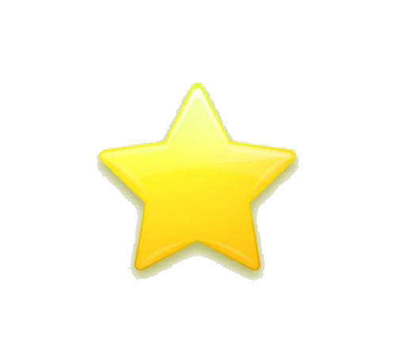

第{{ loop.index }}张图片：{{ data[2] }}
结果分析:
由预测结果可知，鱼眼部位的评定等级为{{ data[6] }}，可信度为{{ data[9] }}； 鱼鳃的评定等级为{{ data[7] }}，可信度为{{ data[10] }}；由上述结果可综合评定该鱼的新鲜度等级为{{ data[8] }}。
鱼眼:
{% for i in range(data[11]) %}

{% endfor %}
鱼鳃：
{% for foo in range(data[12]) %}
{% endfor %}
暂时无数据
{% endif %}